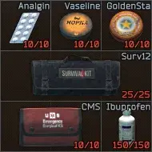

Mod
Dude, where's my meds?
- Downloads
- 1,114
- Favourites
- 9
- Mod lists
- 14
This mod displayed a profile-binding notice on Forge.
Overview
Dude, where’s my meds? is a mod that adds more uses to consumable medications in Tarkov, some of which have been increased to… well.. unbalanced amounts (the perc 3 million).
THIS MOD ISN’T COMPATIBLE WITH DragonX86’s RESTORE MED USES MOD.
Changed Items

Version
1.0.0
SPT ~4.0.13
Fika: unknown
1,114 downloads6.1 KB
Initial Release.
Dependencies
VirusTotal: report 1